Index
This document explains how to create a standard description for a health dataset using the metadata catalogue. Such a description will come in two parts:
- a description of the dataset as a whole
- descriptions of the individual data items within the dataset, and of the structural relationships between them
There is no single, applicable standard for the first part. For the moment, pending the development of the gateway interface, we require only a minimal set of properties, sufficient to uniquely identify the dataset in question. A slightly longer list will be required once the gateway specification has been agreed.
For the second part, we are able to adapt and extend an existing international standard for metadata registration: ISO/IEC 11179. We specify a list of properties that should be recorded for each item, and each relationship; this list will remain unchanged, although the information provided may be updated over time.
If the dataset is held in a relational datastore, then we may be able to determine the name and type of each data item, and the structural relationships between them, automatically. We will not, however, be able to determine an adequate, human-readable explanation of each item ; this will need to be entered by hand and/or carefully extracted from existing, electronic documentation.
Describing the dataset¶
Each of the ‘top level’ descriptions in the catalogue is called a model. Models are stored in a familiar folder (or directory) structure . Folders may have sub-folders. The folder tree is shown to the left of the screen.
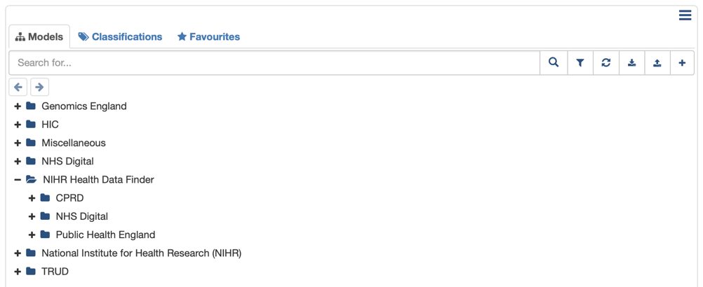
To create a new model of a health dataset, first choose the folder in which you wish to store it. To create a new folder at the top-level, click the ‘plus’ button at the top of the tree view.
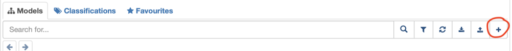
To create a sub-folder of an existing folder, right-click the folder and choose ‘Add folder’. When creating a new folder, you must give it a name , and should enter a short description describing the purpose of the folder.
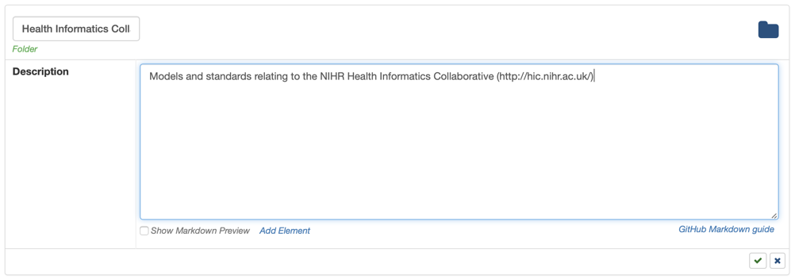
To create a new model, right-click upon the folder in which you want it to appear, and choose ‘Add Data Model’:
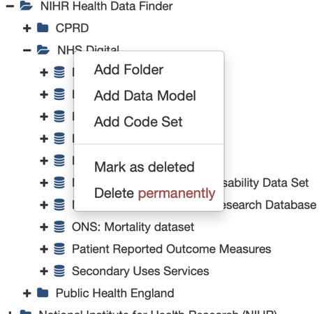
You will be presented with a short form to enter the details of your new model:
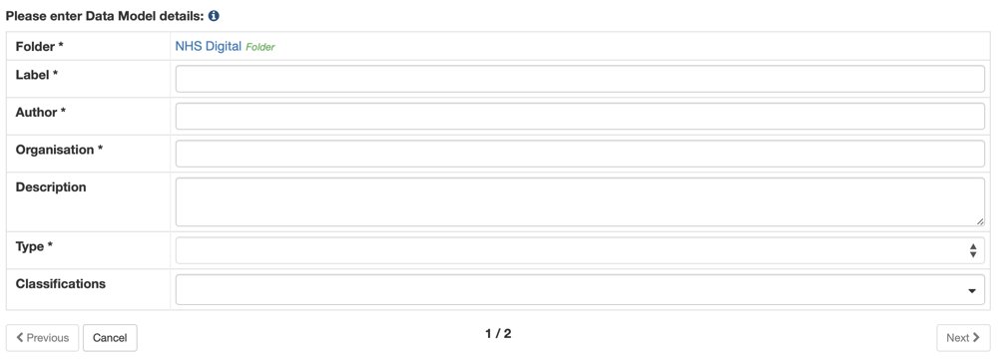
Choose a label for your model. This should be enough to uniquely identify the dataset that you are describing. You will be able to add other names or labels later on.
The author field should be used to record the names of those creating and maintaining this data model (not the dataset itself).
The organisation field should be used to record the name of the organisation holding the dataset.
In the description field, enter a short (e.g. 2 paragraphs), human-readable description of the data stored within that dataset, and any important characteristics of the data.
For type, choose ‘data asset’.
Once you have entered all mandatory fields, labelled with ‘*’, you can click ‘Next’ to choose a default set of data types to be imported into your model.
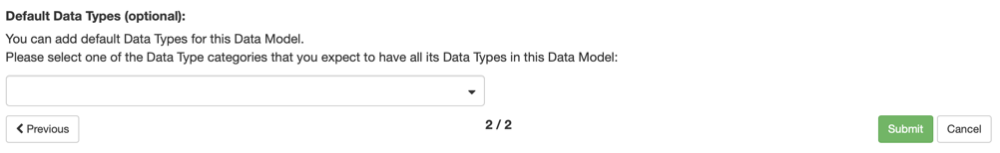
For example, you may choose to import the default datatypes of a MS SQL Server database. If you are unsure at this stage, you can leave the field blank - you can always import these later on.
Click ‘Submit’ to finish creating the new data model. This will take you to the ‘overview page’ of your new model.
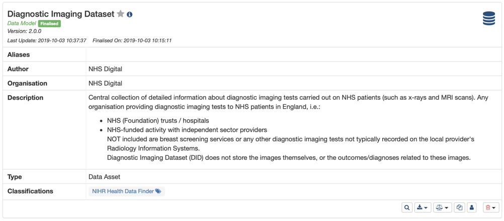
You are welcome to record further characteristics of the dataset - this could help the gateway providers when the come to design their interface . If you wish to do this,
Click the ‘Properties’ tab on the panel below, and choose the ‘+’ button to add each new property.
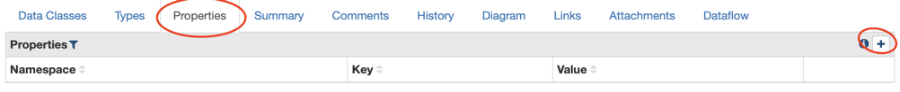
- namespace: This will be used to select the correct profile / property list.
- key: This is the property name - e.g. ‘contact email’. You should add a property for each of the names listed below, but may add further properties if you wish.
- value: This is the value of the given property - e.g. ‘enquiries-mydataset@hub.org’.
Describing the data items¶
Data items are created and managed within data classes. If a dataset is managed as a collection of tables, then you may wish to create a class for each table. This is the default approach. Alternatively, you may wish to create a set of classes to provide a more abstract account of the data set - grouping and presenting the data items in a way that is quite different from the way in which they are stored and managed.
To create a new class, select a data model from the model tree, choose the ‘DataClasses’ tab, and click the ‘+’ button:
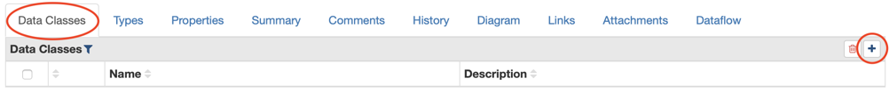
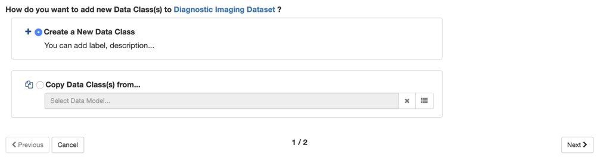
In documenting an existing data set, you will be creating rather than copying classes, so choose the first option and click ‘Next’. You should then choose a name or label for your class.
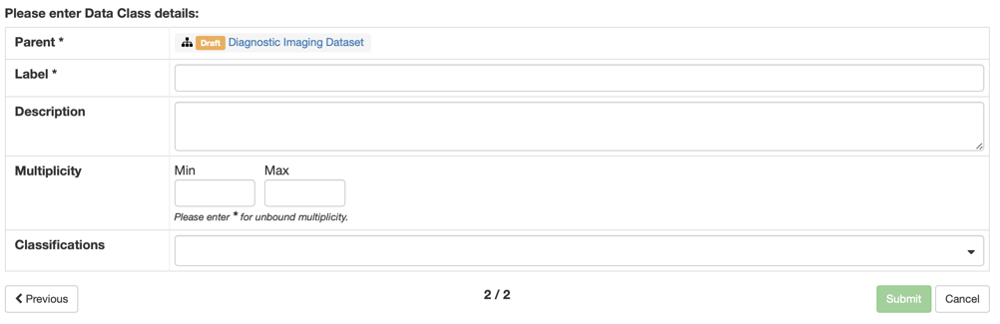
Again, you will be able to add further names later, as aliases, if you wish. The description of a class may explain what kind of data items are grouped together here; alternatively, it may explain some common context for the items it contains, to avoid the need to include that information in the description of each individual item.
The multiplicity values specify the number of instances of that class that may appear in an instance of the model. For example, if a class were to correspond to a table in a relational database, the multiplicity values would be the minimum, and the maximum, number of rows allowed in the table. In a model of a dataset, there is usually no need to specify the multiplicity of a class.
Once all mandatory fields have been completed, you may click ‘Submit’ to create the new data class. This will take you to the page for the newly -created class. You can click the link back to the parent data model to continue adding further classes of data as necessary.
You may also choose to add further ‘child’ classes to this class: choose the 'Content’ tab on the DataClass page, and click the ‘+’ symbol to add a new data class.
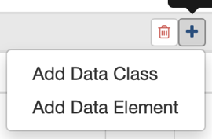
Data items are represented as ‘data elements’ within the model. To start adding data elements to a class, visit its DataClass page, and click the ‘+’ button on the ‘Content’ tab. This will give you two options - to create a new contained ‘child’ class, as above, or to create a new data element - choose the second option.
As with creating a new class, this will give you the option to copy an existing data element from elsewhere in the model (or from another model which you have read access to). In creating a model of an existing dataset, you will almost certainly want to create a new data element.
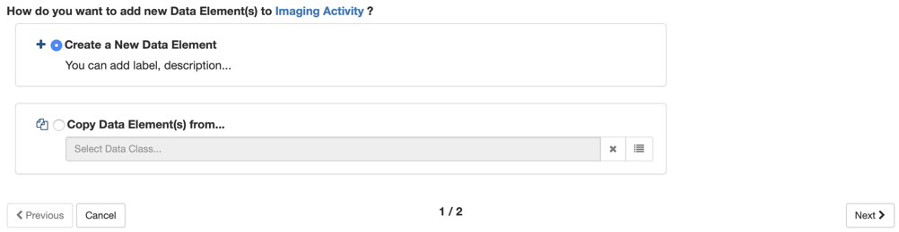
The next form that appears will ask for the details of the new data element:
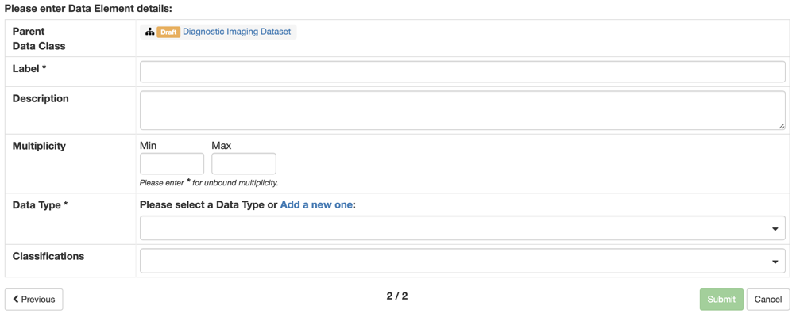
For label, enter the preferred name of the data item. This could be the name of a column in a relational database, for example. You can add further names as aliases later.
In description, you should describe the data item and the values it may take. This may include information about provenance - the context of collection, and any subsequent processing, but should also say something about intended interpretation or possible use. This description should explain the data point in terms that might be useful to prospective data users.
The multiplicity of a data element specifies the number of values that it may take at the same time. For example, the number of ‘date of death ’ items contained within a ‘patient’ record might be at least 0, and at most 1. The min field should be a positive whole number; the max field should be a positive whole number no smaller than min, or may be ‘*’ to indicate that no maximum number is set. If you are unsure, this field may be left blank.
The data type field describes the values that this data item may take. A data type may be either:
- primitive: for example a String, an Integer, or a Date.
- enumerated: chosen from a given list of values, which may be described using codes or free-text. For example M = Male, F = Female, U = Unknown
- reference-valued: a reference to another class of data. For example, the ‘Registered GP’ data element of a ‘Patient’ may refer to a separate class of ‘GP’ (containing name, surgery, address, etc)
When creating a new data element, you can choose to use an existing data type that belongs to the data model in question, or you can create a new data type (by providing its name, the list of values, or a class to reference, respectively). From the data model page it is also possible to import data types from another model, or some pre-defined sets of data types (such as those found in MS SQLServer databases, for example).
Click ‘Submit’ to create the new Data Element. Repeat this process to add the other data elements for each class.
Entering this information offline¶
While creating a model of an existing dataset, you may find it more convenient to enter and share the information above using an Excel spreadsheet - and then upload the contents of that spreadsheet into the catalogue. You can create more than one model using the same spreadsheet.
A blank spreadsheet should be included with this document, together with an example of a completed spreadsheet, describing the Diagnostic Imaging Dataset.
The first sheet o the spreadsheet (which must be called DataModels) should introduce one or more data models. Each subsequent sheet should describe the contents of one of these data models.
In the DataModels sheet, there should be one row for each data model described, and the following columns can be completed:
- SHEET_KEY: the name of the sheet (in this spreadsheet) describing the contents of the data model
- Name: the name or label of the data model (as explained above)
- Description: a brief description of the dataset
- Author: the author of this data model of the dataset
- Organisation: the organisation holding the dataset
- Type: this should be ‘Data Asset’
In the blank spreadsheet supplied, there is a KEY_1 sheet with the column headings required for each of the subsequent sheets. You can rename or copy this sheet. Whatever name is chosen should be included in the list of data models presented in the opening ‘DataModels’ sheet (or the contents will not be uploaded). The following columns should be completed:
- DataClass Path (essential): this should be the path from the top level of the model to the data class described in the current row, or the class containing the item described in the current row; for a top-level class, it will be simply the class name; for child classes, it will be a list of class names, using “|” as a delimiter.
- DataElement Name (essential for data elements): if the row is describing a data element, rather than a data class, then the name of the element should be inserted here
- Description: an explanation of the intended interpretation (and perhaps also the context of collection or provenance) of the DataClass or DataElement
- Minimum Multiplicity (may be left blank): the minimum number of instances of the class or element, usually 0 or 1
- Maximum Multiplicity (may be left blank): the maximum number of instances, with -1 (rather than *) used to indicate that there is no upper bound
- DataType Name (essential for data elements): the name of the data type of the data element being described
- DataType Description (needed only for the first time that the data type in question is mentioned): the description of the data type
- Reference to DataClass Path: if the data type is another class (if the data element is a reference to an instance of another class) then insert the path to that class here
- Enumeration Key and Enumeration Value: if the data type is an enumeration, then you may add several pairs of entries in these two columns, one for each key-value pair in the enumeration; in each case, the key is the text or string that may appear in a column of the dataset, and the value is its expansion or explanatory text. Once you have done this, you will need to select the corresponding cells in the DataClass Path column - the first column - and merge them. You may wish to merge the corresponding cells in the other columns as well, for a clearer presentation of the information: for example,
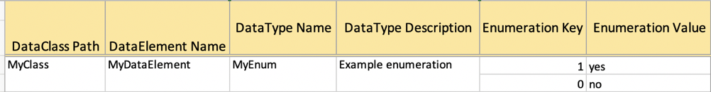
A completed spreadsheet can be imported into the catalogue using the ‘import’ button, located on the toolbar at the top of the screen:
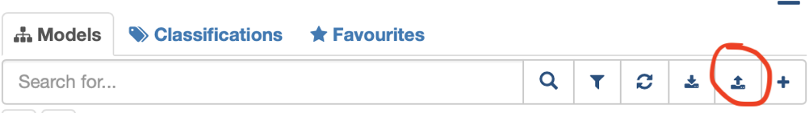
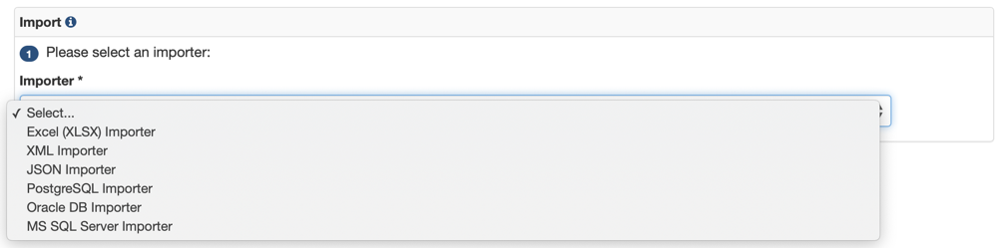
Select the Excel importer.
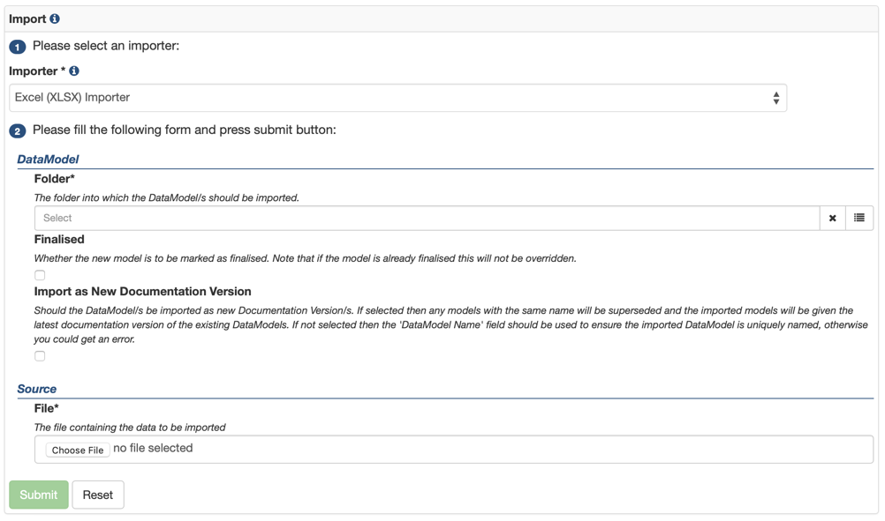
Having chosen to import from a spreadsheet, you will have the opportunity to provide some more information:
- Folder: this is the folder in which the newly created model(s) will reside. The drop-down menu lets you choose a folder which you have access to
- Finalised: we recommend that you keep models as ‘draft’ until the gateway presentation of model descriptions has been decided
- Import: as new documentation version check this option if you intend to replace the current (catalogue) version of an existing model description
- File: Choose the spreadsheet file for upload. You may drag/drop a file from your file browser into the box here.
Press ‘Submit’ to import the model.
Excel files can be safely used to "round-trip" data model descriptions. You can export a model from the catalogue in spreadsheet form, edit the spreadsheet, and import the new version of the spreadsheet to produce an updated version of the model - in this case, you need to select “New Documentation Version”.
Extracting metadata from a relational database¶
If the dataset to be described is held in a relational database, and you have direct access to that database, you can also use the catalogue to extract basic metadata - table names, column names, types, and structural relationships - from the database itself. The effort of manual data entry can then be focussed upon producing adequate accounts of the account of the intended interpretation of each data element. Clicking on the ‘import’ button as above, you can select an importer for most types of relational database.
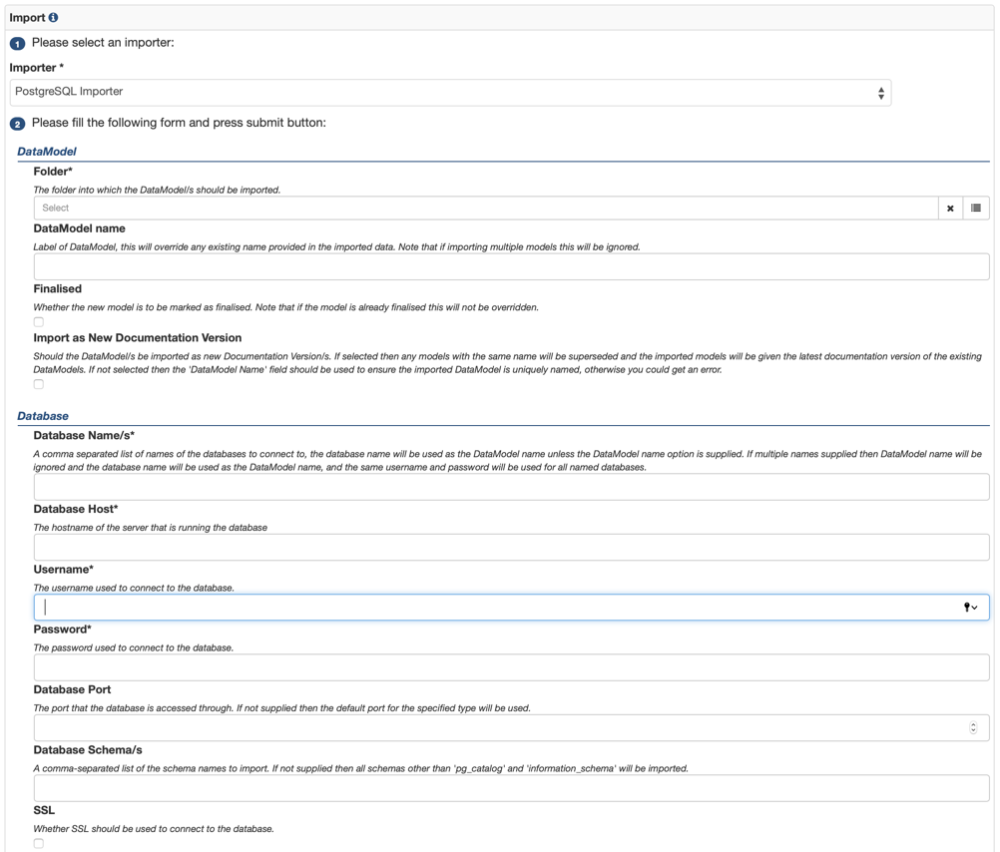
Having chosen to import from a relational database, the next set of options allow you to configure the import. Fields marked with a ‘*’ are mandatory. The fields should be completed as follows:
- Folder: this is the folder in which the newly created model(s) will reside. The drop-down menu lets you choose a folder which you have access to
- Data Model Name: this will be the name of the new data model. If no name is specified, the name of the database will be used.
- Finalised: if the newly-imported model is immediately ‘finalised’, you will no-longer be able to make changes to it. We recommend that you keep models as ‘draft’; otherwise if you wish to edit the descriptions you will need to create a new version.
- Import as new documentation version: this determines how the newly imported model supersedes any existing model with the same name. We recommend you check this option if you intend to overwrite an older version of the model.
- Database Name(s): please enter the database name. If you’d like to import multiple databases in one go, please enter the list of names , separated by a comma.
- Database Host: this is the IP address, or the server name, of the machine that the database is installed on.
- Username: this is the username which is used to connect to the database. Ideally, a user with read-only access will be used. This is not stored within the Metadata Catalogue application.
- Password: the password used by the user to connect to the database. This is not stored within the Metadata Catalogue application.
- Database port: the port which the database is communicating on - eg. 1433 for MS SQL Server. If no port is specified, the default port for the database will be used (MS SQL Server: 1433, Postgres: 5432, OracleDB: 1521)
- SSL: whether the database requires an encrypted connection (usually false).
Other features¶
The catalogue toolkit has a range of related functions for creating and updating models of datasets and data standards. As the features of the gateway interface are determined, we will update this documentation to address any additional metadata requirements, and to describe any additional functions that have become relevant. We will update it also to describe any improvements made to the functions described above.